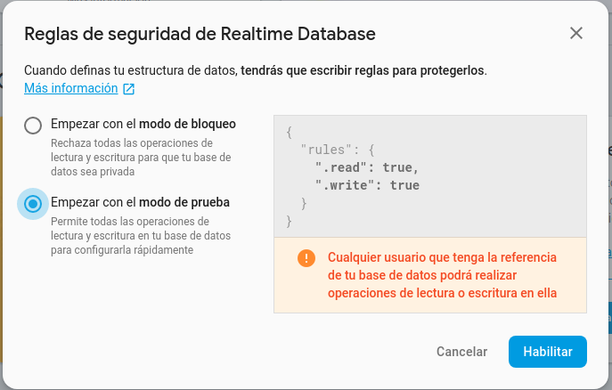

Crear una aplicación
La base de datos —que, como hemos visto, puede ser un único documento JSON en el caso de Realtime Database, o un conjunto completo en el caso de Cloud Firestore— está asociada a una aplicación.
Crearemos una nueva aplicación desde el entorno de Firebase, y será la referencia de esa aplicación la que utilizaremos en nuestra aplicación web o aplicación móvil. De este modo, podemos crear varias aplicaciones de Firebase, y en cada una de ellas almacenar una base de datos diferente. Para ello, será necesario autenticarnos con una cuenta de Google.
El proceso de creación se realiza desde el entorno de Firebase: www.firebase.com .
El siguiente vídeo muestra el proceso de creación de una aplicación:
Reglas de seguridad
Inicialmente elegiremos la opción modo de prueba, en la cual todo el mundo puede acceder a los datos. Evidentemente, no se deben dejar estas reglas de forma definitiva, pero para empezar a realizar pruebas está bien.
De hecho, en la última versión se mantiene el modo de prueba durante un mes. En cualquier caso, si quisiéramos ampliarlo, podríamos hacerlo desde la configuración de las rules (reglas).

🔹Acceso desde IntelliJ
Veremos el acceso desde IntelliJ, que es el entorno que utilizamos en el presente módulo.
Para desarrollar una aplicación en IntelliJ con Kotlin que acceda a Firebase, una forma bastante sencilla es utilizar Maven para gestionar las dependencias necesarias.
A continuación, se indican los pasos y las dependencias que deben añadirse al archivo pom.xml:
a) Repositori Maven de Google:
Algunas dependencias de Firebase pueden no estar disponibles en el repositorio Maven Central. Aseguraos de añadir también el repositorio de Google para que puedan resolverse correctamente.
<repositories>
<repository>
<id>google</id>
<url>https://maven.google.com/</url>
</repository>
</repositories>
b) Añade Firebase Admin SDK.El Admin SDK es la biblioteca principal que permite interactuar con los servicios de Firebase, como Realtime Database, Cloud Firestore, Authentication, entre otros.
<dependency>
<groupId>com.google.firebase</groupId>
<artifactId>firebase-admin</artifactId>
<version>9.1.1</version>
</dependency>
c) Servicios Adicionales
Si necesitas interactuar con servicios específicos, como Firestore o Realtime Database, aquí tienes las dependencias correspondientes:
Cloud Firestore
<dependency>
<groupId>com.google.cloud</groupId>
<artifactId>google-cloud-firestore</artifactId>
<version>3.15.0</version>
</dependency>
<dependency>
<groupId>com.google.auth</groupId>
<artifactId>google-auth-library-oauth2-http</artifactId>
<version>1.27.0</version>
</dependency>
Realtime Database
La funcionalidad de Realtime Database está incluida en el Admin SDK, por lo que no es necesario añadir dependencias adicionales. Simplemente utiliza las clases que proporciona firebase-admin.
Nota
Haz clic en Reload Maven Project para asegurarte de que todas las dependencias se descargan correctamente.